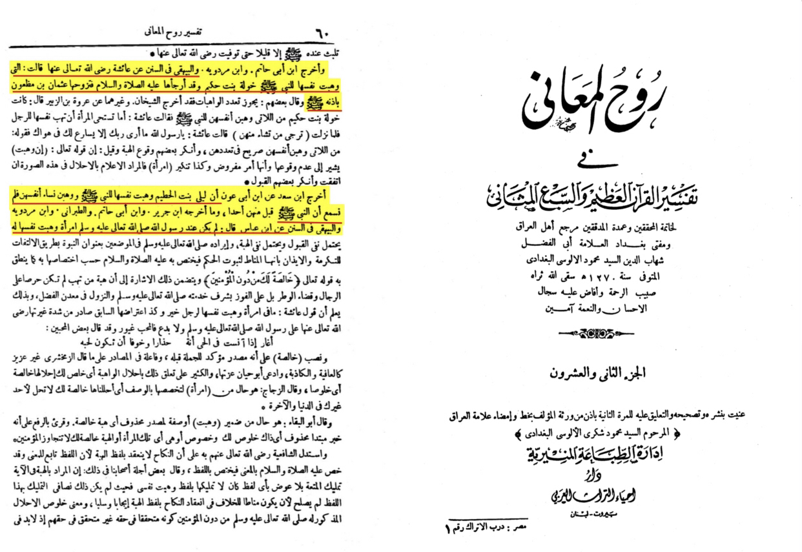

Surah Al-Ahzaab (The Clans)
33:50
Prophet, We have made lawful for you the wives whose bride gift you have paid, and any slaves God has assigned to you through war, and the daughters of your uncles and aunts on your father’s and mother’s sides, who migrated with you. Also any believing woman who has offered herself to the Prophet and whom the Prophet wishes to wed- this is only for you [Prophet] and not the rest of the believers: We know exactly what We have made obligatory for them concerning their wives and slave-girls- so you should not be blamed: God is most forgiving, most merciful.
Translation: Abdul Haleem | Medinan
Many people have made the claim the prophet is lustful because he wants the women to offer herself to marriage
However we disproving this today
First let us examine what did we get from this verse
The verse implies that he can marry a women without mehr what does that mean. Mehr is given in fear of injustice and there is no injustice with him peace be upon him , meaning that he is infatiable
Second did the prophet ever do it if he didn’t it gives a glance why he is not the proper author of the Qūr’ān
Tranlation: al-bayhaqui produced a narration from bin abbas saying the prophet never had any women who offered herself to him (without mehr)
-Source: Tafsir ruh al-ma’ani volume 22 page number 60
